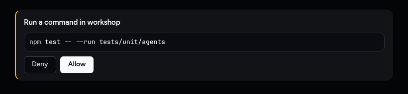
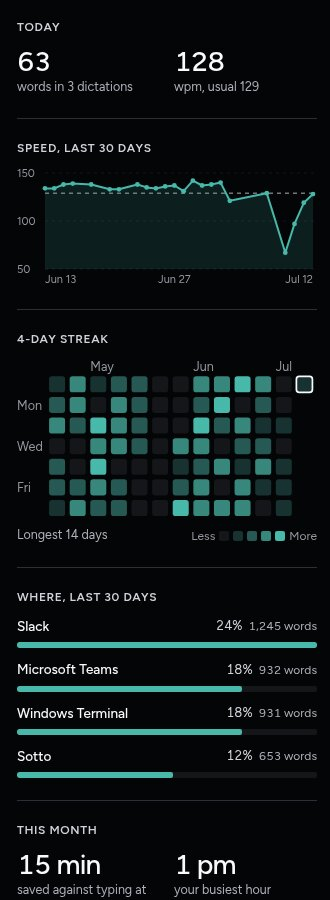
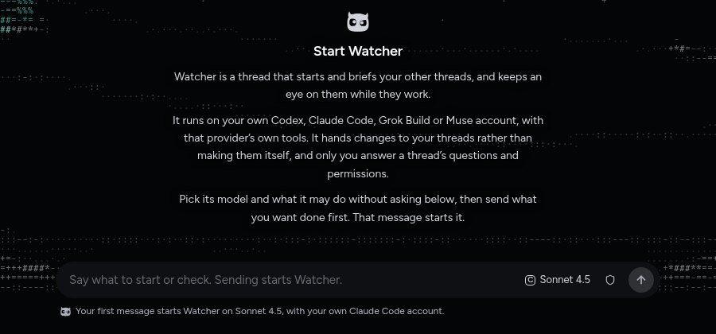
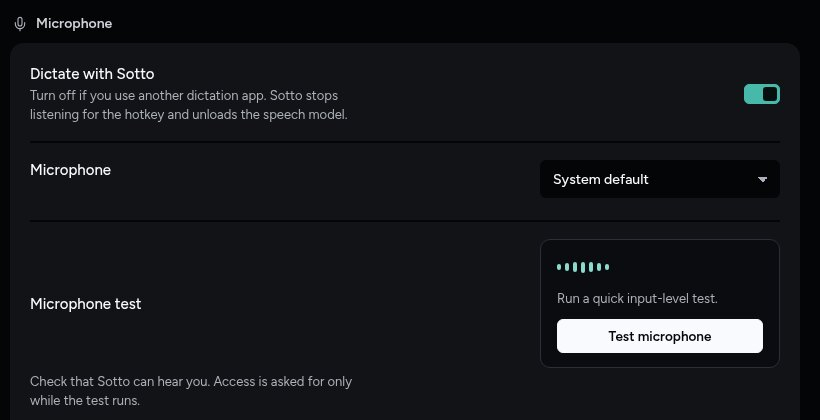
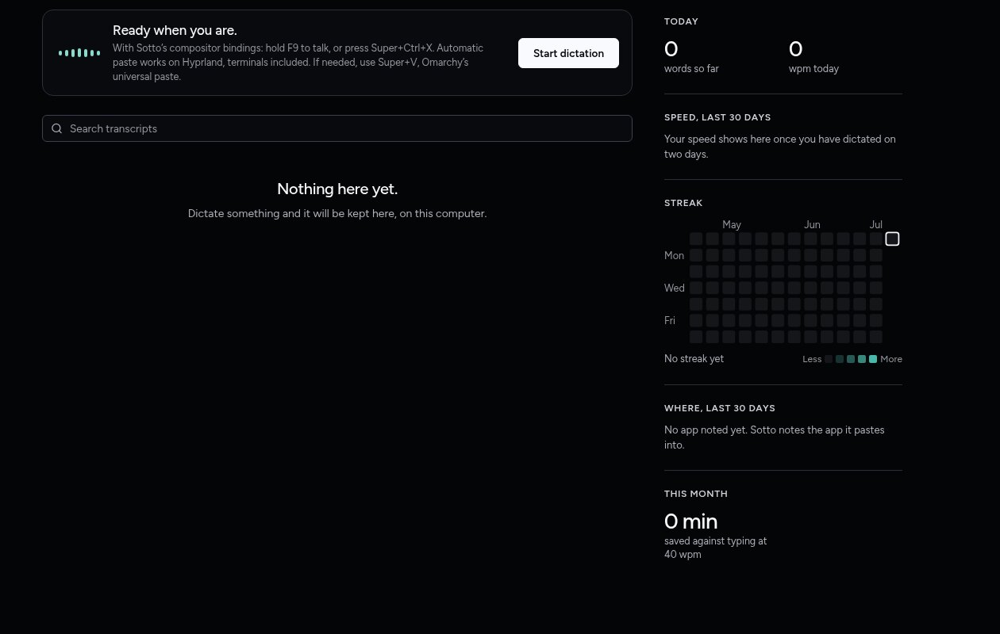
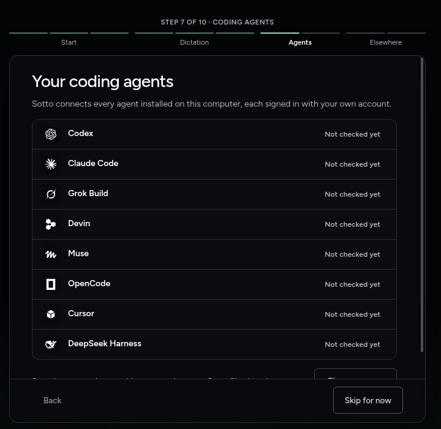

Six small visual fixes from the desktop UI review. Left: today's capture from the Owl build. Right: the proposal, drawn in Sotto's dark or light room; flip with the bar at the bottom or ← →. Where there are two good answers, A and B sit above the proposal.
Nothing here changes the composer's edge (it has none) or Watcher's still night scene.
The permission card says it needs you in its heading, its buttons and the sidebar. The 2 px amber stripe repeats it, and the same stripe sits on five other kinds of card. A drops it; B keeps a hint of urgency in the card's fill instead.

A: a plain card. The words and the buttons carry it.
Dictate's stats and day headings, and setup's step line, are in tracked capitals. Everything else in Sotto, and the whole iPhone app, uses sentence case.

Today
Speed, last 30 days
4-day streak
Where, last 30 days
This month
The Journal's day headings follow: "Today", "Yesterday", "Friday, July 10". Setup reads "Step 1 of 10" over the progress bar, and the "Welcome to Sotto" eyebrow goes because the heading under it says it.
Three centred paragraphs say "sending starts it" three times: in the last paragraph, in the placeholder and in the footnote. The proposal says it once, left-aligned, and keeps the footnote that names the model and account. The provider and permissions paragraph moves to Help.

The night scene behind is unchanged; it is only hinted here.
ADR-0110 made every container a filled card with no outline. The Microphone test is still an outlined box inside a card, with its label split from its words. Hosts & phones still uses flat rows and a dashed box.

Hosts & phones gets the same treatment: "This computer" and "Tailscale" on one card, Remote hosts on a card, Phones on a card with its three checks as rows, and "Pair a phone" as a row with its button.
A new user's Dictate room shows a full column of zeros and an empty calendar, Usage shows four filters, three tabs, a chart and seven empty metrics, and the Threads sidebar says "No open threads." under every project.

The card stays about 375 px tall at any window size. On step 7 the next line and its button are cut off under the footer. On step 9 the filled button is "Add a computer" though most people skip. The card also has an outline.

The card grows with its content up to the window, and the footer sits under the content, not over it. On an optional step whose task hasn't started, Skip for now is the filled button.